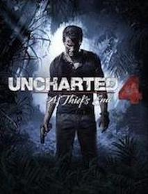

Uncharted 4: A Thief's End Review- A Perfect Conclusion

Uncharted 4: A Thief's End is the perfecting conclusion to the main line Uncharted series. It rounds of Nathan Drake's story perfectly. The spectacle and set-pieces are some of the best in the series, but it also has some flaws with some basic mechanics.
The story of Uncharted 4 begins with Nathan Drake having a flashback of himself, Rafe Adler and his brother Sam Drake looking for treasure in a prison. His brother supposedly gets killed and it skips to many years after the events of Uncharted 3 and Nathan is living a normal life with a job and a house that he lives in with Elena. His brother turns up and says he needs to be saved and then Nathan agrees to have one last adventure, without Elena knowing. The story has great character development with Nathan, Sam, Rafe who becomes the antagonist and Elena. Sully is a side character who still has the charm and wit he always had, Nadine is a new comer to the series and her characterisation was also well done. The overall story deviates from the Uncharted formula and creates are more personal story that is simple but well-told. I won't spoil anything because for long time Uncharted fans it leaves Nathan with an emotional ending and for new comers it is a satisfying conclusion.
The gameplay in Uncharted is enjoyable, but at times simplistic. The core gunplay is the most refined in the series and there are a few varied enemy types that add challenge to combat. The gun variety and use of grenades allows for a bit of freedom as well. You can also use hand to hand combat during gunplay which consists of pressing the square button and is usually ineffective and only necessary as a finisher. You can climb and use cover during combat and the added climbing areas adds a little more complexity. The grappling hook is also useful during combat as it is a good way to escape enemy fire, heal and doing a finisher on an enemy where Nathan drops down to punch them, as well as take their gun. The climbing mechanics are very simple and dull as it is just move in a direction and press x. The grappling hook does add a new layer to the climbing which is a welcomed change. There are some missions where stealth is necessary, but it is very simple as all players can do is hide in a bush or behind cover and press square to do a takedown. As stealth was uninspired, lacking complexity and unnecessary I would usually go for the 'guns blazing' approach. The exploration was rewarding and the added vehicle and driving was an interesting change to exploration. World design was well done and every area was visually interesting, larger than other Uncharted games, as well as inspired. Most of the puzzles were solid with a few being badly designed. There were also some more padded out and slow walking sections, mainly in the beginning, this just being bad game design. Uncharted is most known for its set-pieces being an over the top spectacle and Uncharted 4 does not hold up. The set-pieces are some of the best and most memorable in the series. They are perfectly choreographed and combine many gameplay mechanics with them, causing the spectacle to have substance as well in some scenes. Overall, most of the game design is well done, with some simplistic flaws.
Uncharted 4: A Thief's End is a spectacle of a video game with fantastic graphical detail, set-pieces, a great story and some solid game design. There were multiple flaws with how simplistic some of the gameplay was the bad design of puzzles and more slow sections. Regardless, Uncharted 4: A Thief's End is the perfect conclusion to Nathan Drake's adventures and is a masterpiece, as well as a future classic.